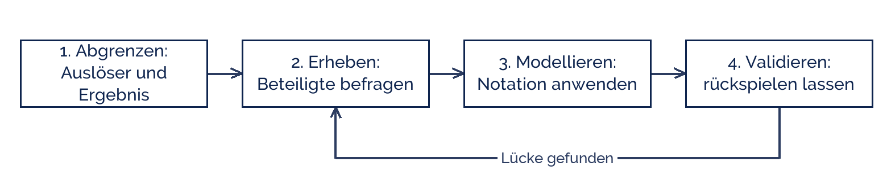

Sarahhax2210
Sarahhax2210
Good morning!
Nur das Schöne wird die Welt retten!
Fjodor Dostojewski
Nicht verzagen, Doc Alvers fragen!
Informatik — Grundkurs 12
Prozesse modellieren
Vom realen Ablauf zum Modell — Ziele, Grundsätze und die erste Aufnahme
Nicht verzagen, Doc Alvers fragen!
Kapitel 01
Was ist ein Prozess?
Und was ihn vom Ablauf unterscheidet
Nicht verzagen, Doc Alvers fragen!
Die Definition, mit der wir arbeiten
Ein Prozess ist eine Folge von Tätigkeiten, die aus einem Auslöser ein Ergebnis macht
Er hat einen Anfang (ein Ereignis) und ein Ende (ein Ergebnis)
Er läuft wiederholt ab — nicht einmalig wie ein Projekt
Er überquert oft mehrere Rollen oder Abteilungen
Und er lässt sich messen: Dauer, Kosten, Fehlerquote
Nicht verzagen, Doc Alvers fragen!
Prozess, Projekt, Funktion — auseinandergehalten
| Prozess | Projekt | |
|---|---|---|
| Häufigkeit | wiederholt sich ständig | einmalig |
| Ziel | ein Ergebnis je Durchlauf | ein Ergebnis insgesamt |
| Beispiel | Bestellung bearbeiten | Onlineshop einführen |
| Verbesserung | am Ablauf selbst | am Ergebnis |
Beides braucht Modelle — aber verschiedene
Ein Geschäftsprozess ist ein Prozess, der zum Zweck des Unternehmens beiträgt
Nicht verzagen, Doc Alvers fragen!
Kapitel 02
Wozu modellieren?
Fünf Ziele, die den Aufwand rechtfertigen
Nicht verzagen, Doc Alvers fragen!
Ziele der Prozessmodellierung
| Ziel | heißt konkret |
|---|---|
| Verstehen | alle Beteiligten sehen denselben Ablauf |
| Dokumentieren | das Wissen hängt nicht an einer Person |
| Verbessern | Doppelarbeit, Wartezeiten und Schleifen werden sichtbar |
| Automatisieren | was modelliert ist, kann ein System übernehmen |
| Prüfen | Vorgaben und Regeln lassen sich nachweisen |
Das häufigste Ziel in der Praxis ist das erste: Beteiligte haben verschiedene Bilder im Kopf
Ein Modell macht die Unterschiede sichtbar — oft ist das schon der halbe Gewinn
Nicht verzagen, Doc Alvers fragen!
Die Grundsätze ordnungsmäßiger Modellierung
Richtigkeit: das Modell bildet den Ablauf zutreffend ab
Relevanz: nur was für den Zweck gebraucht wird, kommt hinein
Wirtschaftlichkeit: der Aufwand muss zum Nutzen passen
Klarheit: die Adressaten müssen es lesen können
Vergleichbarkeit und systematischer Aufbau: gleiche Notation, gleiche Regeln
Nicht verzagen, Doc Alvers fragen!
Kapitel 03
Die Aufnahme
Wie ein Prozess erhoben wird
Nicht verzagen, Doc Alvers fragen!
Vier Schritte der Prozessaufnahme

Schritt 4 ist der wichtigste: die Beteiligten bestätigen das Modell — oder eben nicht
Wer nur am Schreibtisch modelliert, bildet den Prozess ab, den es geben sollte
Nicht verzagen, Doc Alvers fragen!
Die typischen Funde bei der ersten Aufnahme
Der dokumentierte und der gelebte Prozess sind nicht derselbe
Es gibt Sonderwege, die niemand aufgeschrieben hat
An einer Stelle wartet der Vorgang regelmäßig — ein Engpass
Dieselbe Angabe wird mehrfach erfasst
Und: niemand kann sagen, wie lange der Prozess insgesamt dauert
Nicht verzagen, Doc Alvers fragen!
Ein Prozessmodell ist erst fertig, wenn die Beteiligten sich darin wiedererkennen — nicht, wenn es schön aussieht.
Merksatz
Nicht verzagen, Doc Alvers fragen!
Fun Facts: Prozesse
Der Begriff Geschäftsprozess wurde durch Hammer und Champy 1993 populär — Business Reengineering
Ihre These: Prozesse neu denken, statt sie zu optimieren. Viele Projekte scheiterten daran
Die Grundsätze ordnungsmäßiger Modellierung stammen von Becker, Rosemann und Schütte (1995)
Die Durchlaufzeit eines Vorgangs besteht in der Praxis oft zu über 80 % aus Liegezeit
Deshalb bringt das Beschleunigen einzelner Tätigkeiten meist wenig
Nicht verzagen, Doc Alvers fragen!
Eure Aufgabe: einen Prozess aufnehmen
Wählt zu zweit einen Prozess der Schule: Krankmeldung, Raumbuchung oder Materialausgabe
Abgrenzen: Was löst ihn aus, was ist das Ergebnis, wer ist beteiligt?
Erheben: Schreibt die Tätigkeiten in der richtigen Reihenfolge auf
Markiert je eine Stelle mit Wartezeit und eine mit Doppelerfassung
Prüft euer Ergebnis an den Grundsätzen: richtig, relevant, klar?
Nicht verzagen, Doc Alvers fragen!